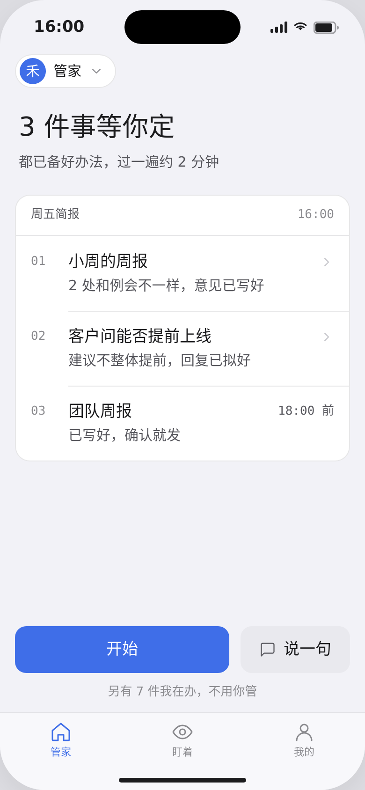
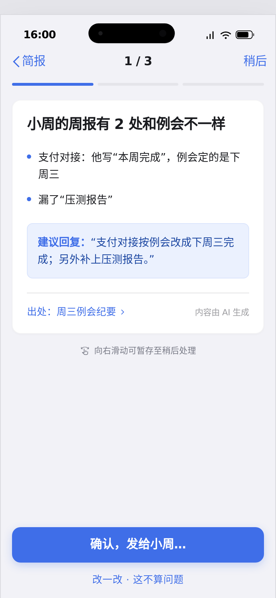
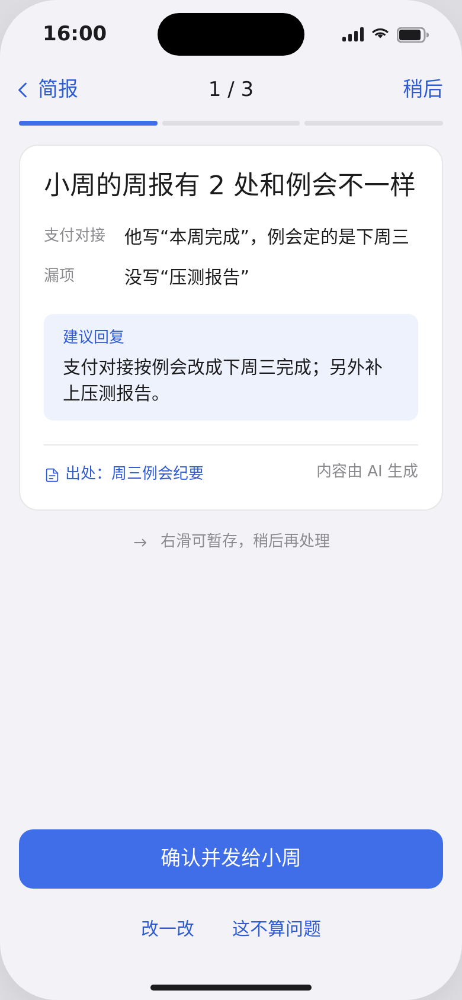
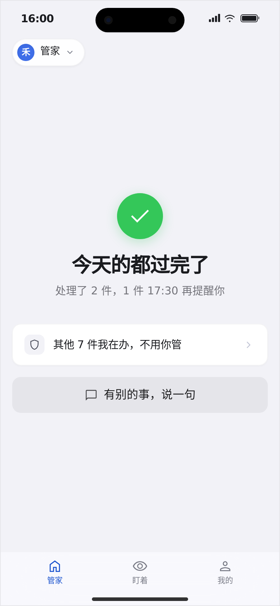
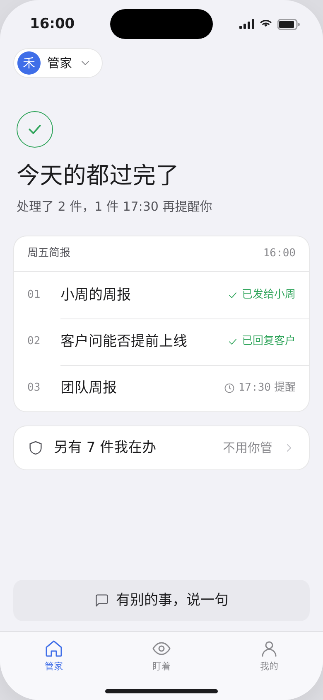
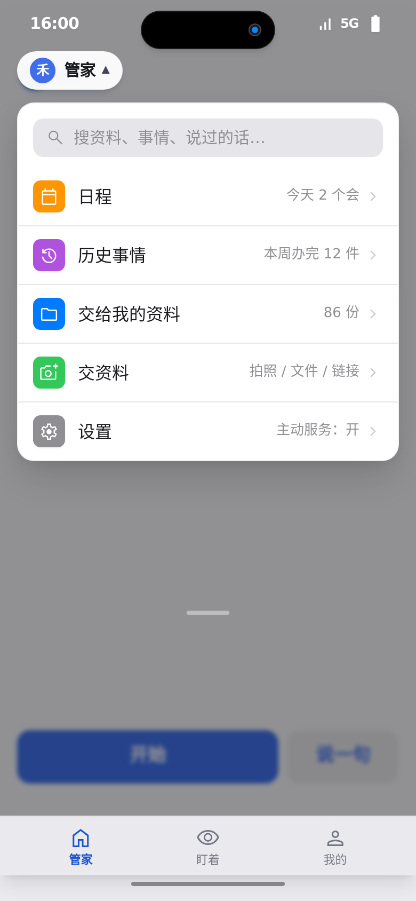
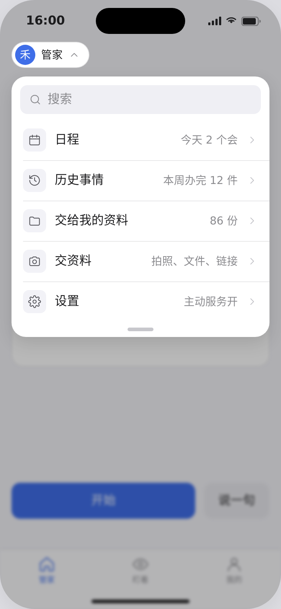
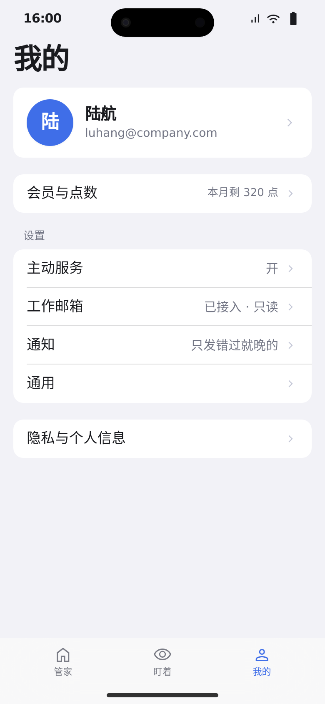
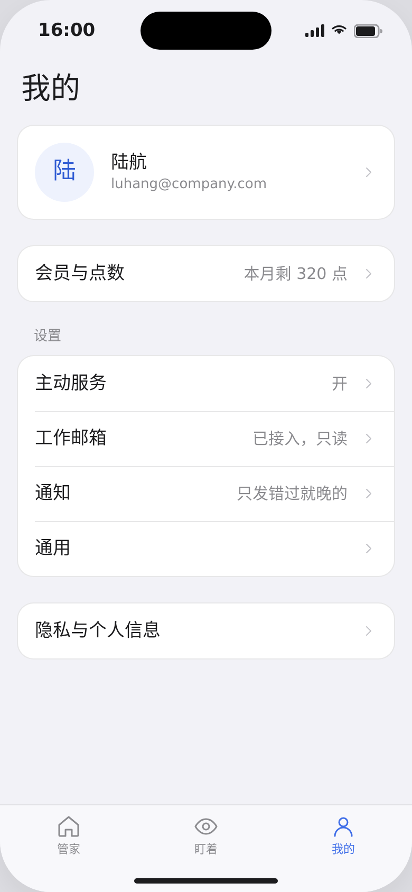
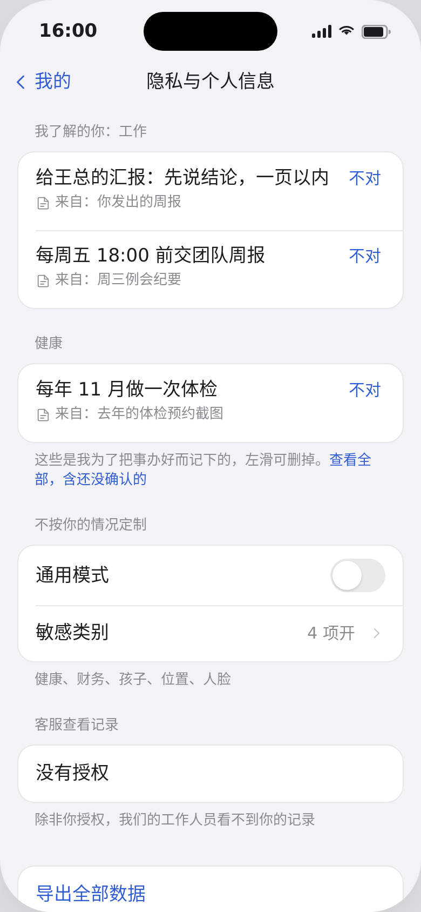

改了什么
- 问候语“下午好，陆航”换成“3 件事等你定”
- 三件事做成一张“周五简报”：顶部写时间，等宽件号 01–03，截止时间放右侧
- 标题字重从 800 观感降到 500
左边是 Stitch A 套原稿（.tmp/ios/app-ios/），右边是打磨版。只用了打磨模式：主色 #3F6EE8、冷灰底、系统字体都没动。方向：稳妥、利落、带一点体贴，像下午四点秘书递来的一页简报。标志细节是“出处”行，只出现在逐件过和隐私页。











全局：字号收成 13 / 15 / 17 / 22 / 28 五档，字重 400 / 500；间距都是 4 的倍数；去掉 transition-all 和彩色按钮阴影；6 屏共用一套状态栏和 Tab bar（shell.js），图标统一为 1.5 描边的线框图标；不再依赖 Tailwind CDN 和 Google 字体。
按 unslop by @heydamir（CC BY 4.0）流程完成